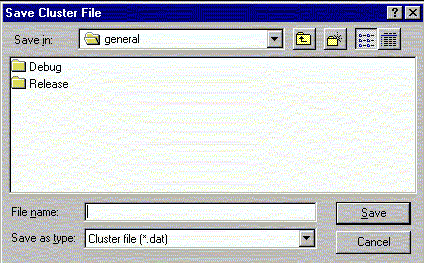

**************************************************************************
Write cluster widget
Leif Laaksonen CSC 1996
**************************************************************************
A previously calculated cluster matrix can be exported from gOpenMol to be used by other programs or to be read back to gOpenMo at a later time.

**************************************************************************
LUL/1996
**************************************************************************